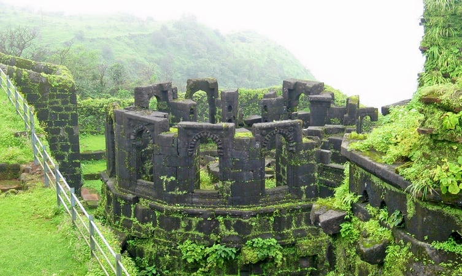

1. Bekal Fort

2.Parappa Wildlife Sanctuary

3. Ranipuram Hills

4. Thaikadappuram Beach

5.Mallikarjuna Temple

6. Hosdurg Fort

7. Veeramala Hills
8. Cheruvathur
9. Valiyaparamba
10. Kottancheri Hills


Kasargod is a small coastal town in Northern Pary of Kerala displaying a delightful blend of various religions, culture and bounty of nature. Blessed with majestic forts, lofty hills, beautiful offbeat backwaters, temples and pristine beaches, the town oozes charm and tranquillity from every aspect. It is gaining popularity among people from nearby cities owing to the presence of luxury resorts.
Kasargod is also known for its rich and glorious past, is considered to be home to some of the best-preserved forts in Kerala. The variety of art and culture of the town speaks volume about its diversity. In fact, one can hear about seven languages spoken in the town, Tulu, Malayalam, Kannada, Tamil and Konkani being the most famous ones. Adorned with several tourist attractions, this family-friendly destination with booming coir and handloom industry is worth a visit.
Off the radar for commoners and the land of exquisite folk art, tourist places in Kasaragod are reserved for hardcore and offbeat travelers in troops, pair or alone any time of the day and year. Early morning while your vision is still hazy your ears will automatically attune to the blissful soundscape.
Hosting numerous forts, wildlife sanctuaries, temple protected by a ‘croc’ - say the locals and magnificent hills, Kasaragod is uptown in all aspects. The ultimate traveling destination, has it all to enchant you. The natives are very friendly and the harmony between people of various religions is to be highlighted.
A rare district in India housing seven languages and vivid appreciable cultures. Also, experience the Malabar coastal winds you have been reading about in Geography all this while. Get set to be awestruck and jaw dropped to find manmade and nature blend at its best at Kasaragod.